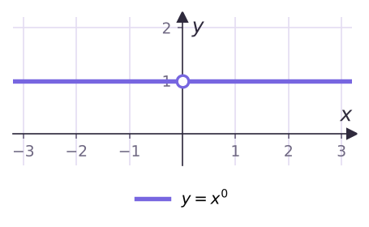
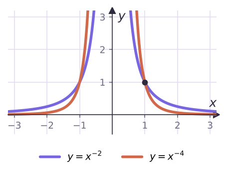
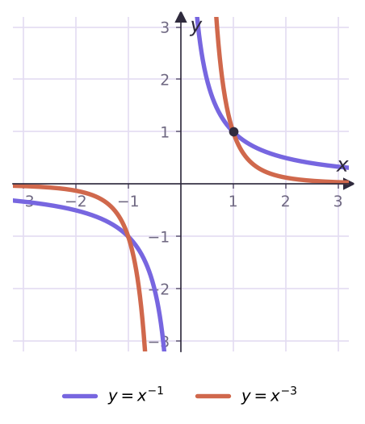
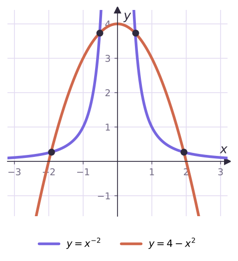

Теория
Функцию y = xn, где n ∈ Z, называют степенной функцией с целым показателем. Натуральный показатель мы разобрали в § 9. Остались два случая: показатель равен нулю и показатель — целое отрицательное число.
Нулевой показатель
По определению a⁰ = 1 при a ≠ 0, а 0⁰ не определено. Поэтому y = x⁰ — это «почти» прямая y = 1: область определения (−∞; 0) ∪ (0; +∞), область значений — одно число {1}. На графике в точке (0; 1) — «дырка».

Выражение (x − 2)⁰ равно 1, но только при x ≠ 2. Нулевая степень «съедает» точку из области определения — не забывай её выколоть.
Отрицательный показатель: y = x⁻ⁿ, n ∈ N
Запишем x−n = 1/xn. Сразу видно: делить на ноль нельзя, поэтому область определения (−∞; 0) ∪ (0; +∞), и нулей нет — дробь с числителем 1 нулю не равна. Чем больше |x|, тем меньше |y|: график приближается к оси Ox, но никогда её не касается. Чем ближе x к нулю, тем больше |y|: график приближается к оси Oy.
n чётное (y = x⁻², x⁻⁴, …): значения только положительные, функция чётная, возрастает на (−∞; 0) и убывает на (0; +∞).
n нечётное (y = x⁻¹, x⁻³, …): знак совпадает со знаком x, функция нечётная, убывает на каждом из промежутков (−∞; 0) и (0; +∞).


| Свойство | y = x⁻ⁿ, n чётное | y = x⁻ⁿ, n нечётное |
|---|---|---|
| Область определения | (−∞; 0) ∪ (0; +∞) | (−∞; 0) ∪ (0; +∞) |
| Область значений | (0; +∞) | (−∞; 0) ∪ (0; +∞) |
| Нули | нет | нет |
| Знак | y > 0 на (−∞; 0) и (0; +∞) | y < 0 на (−∞; 0), y > 0 на (0; +∞) |
| Чётность | чётная | нечётная |
| Монотонность | возрастает на (−∞; 0), убывает на (0; +∞) | убывает на (−∞; 0) и на (0; +∞) |
Функция y = x⁻³ убывает на каждом промежутке, но не на всей области определения: −1 < 1, а (−1)⁻³ = −1 < 1⁻³ = 1. Поэтому сравнивать значения по монотонности можно только для чисел одного знака.
Разбор примеров
а) f(x) = x⁻⁴: сравни f(−2) и f(3). б) f(x) = x⁻³: сравни f(−2) и f(3).
а) Функция чётная: f(−2) = f(2). На (0; +∞) она убывает, 2 < 3, значит, f(2) > f(3). Итак, f(−2) > f(3).
б) Числа разных знаков — монотонность здесь не поможет. Но f(−2) < 0 < f(3): f(−2) < f(3).
Найди область определения функции y = (x − 2)⁻² + x⁰.
(x − 2)⁻² = 1/(x − 2)² требует x ≠ 2; x⁰ требует x ≠ 0. Ответ: (−∞; 0) ∪ (0; 2) ∪ (2; +∞).
Найди наибольшее и наименьшее значения: а) y = x⁻² на [1/2; 3]; б) y = x⁻³ на [−2; −1].
а) На (0; +∞) функция убывает: наибольшее y(1/2) = 4, наименьшее y(3) = 1/9.
б) На (−∞; 0) функция убывает: наибольшее y(−2) = −1/8, наименьшее y(−1) = −1.
В б) легко перепутать: отрезок отрицательный, и «большее» значение здесь −1/8, а не −1.
Сколько решений имеет уравнение x⁻² = 4 − x²?
Построим графики y = x⁻² и y = 4 − x² — видно четыре общие точки.

Проверим алгебраически: x ≠ 0, умножим на x²: 1 = 4x² − x⁴, то есть x⁴ − 4x² + 1 = 0. Для t = x²: t = 2 ± √3 — оба корня положительны, каждый даёт два значения x. Четыре решения.
Задачи урока
Реши в тетради. Ответы разберём на занятии.
Из учебника
- № 10.1, 10.2 — Сравнение значений функций с отрицательным показателем.
- № 10.3 — Область определения с нулевой и отрицательной степенью.
- № 10.4 — Построение графиков.
- № 10.6, 10.7 — Наибольшее и наименьшее значения на промежутке.
- № 10.8 — Число решений системы графически.
Тест к уроку
Домашнее задание
№ 10.2, 10.5, 10.7, 10.9 (1) из учебника письменно. Заполнить по памяти сводную таблицу свойств y = x⁻ⁿ для чётного и нечётного n.